Getting Started¶
Overview¶
First things first, let’s begin with the basic introduction of FabDep which will help you get a better view of the tool. The word FabDep is derived from two words: “Fabric” and “Deployment”. And as the name suggests, FabDep allows you to create a Hyperledger Fabric-based Blockchain network with minimal time and effort and help you deploy it on multiple clouds using native Kubernetes.
To put it another way, FabDep is a robust Blockchain-based desktop application that allows a consortium of organizations to securely deploy enterprise-level Blockchain networks on their preferred cloud VMs (Google Cloud, Microsoft Azure, or AWS) using Kubernetes and manage them all in one place. The tool assists in setting up various components of the Blockchain network, including certificate authorities, orderer, consortium members, ordering services, peers, channels, and chain-code.
Without a doubt, creating a Blockchain network and its components, and that too using native Kubernetes, requires substantial technical expertise. But if you’re using FabDep, then you can create a Blockchain network of any topology without being an expert network engineer.
Now that you’ve got a glimpse of what FabDep is, let’s move ahead to the process of creating a Blockchain network using FabDep. We will be covering the installation of each Blockchain component one-by-one, so sit tight, grab and coffee and keep reading.
Creating a Blockchain network using FabDep¶
Cluster¶
To set up a Blockchain network using FabDep, the very first thing that you need to do is - create a Cluster. When we say Cluster, it means the Kubernetes Cluster. The Hyperledger community strongly recommends that the Blockchain production-level network should be set up on Kubernetes Cluster. That’s where FabDep comes in and saves the day.
FabDep is designed in a way that it takes at least 2 Virtual Machines (vCPUs) on any cloud to create a Kubernetes Cluster. You can have any number of machines. There will be one master node and all others will be worker nodes. FabDep allows us to create any number of worker nodes. It also allows you to add worker node(s) in existing Kubernetes Cluster. So, if you’re not sure about how many worker nodes are required, then you can start with minimal workers and add additional nodes later. Apart from this, FabDep will install NFS client on Cluster to create the NFS drive to store various crypto-material to be used by Blockchain network components.
Network¶
Network here refers to the Blockchain business network under which you will create various Blockchain components. First, you need to enter the name of the network and then select Clusters that you need to add to the network. FabDep will create the Kubernetes namespace and will also set up the persistent volume, persistent volume control.
Creating namespace, persistent volume, and persistent volume control won’t do any good if you don’t launch any Kubernetes service after creating a network. Therefore, FabDep launches Registrar CA while creating a network.
Registrar CA is the TLS-based CA. As per Hyperledger fabric, there must be one TLS-based CA which will authenticate the communication between various consortium members. FabDep facilitates you to create your own certificate authority to generate your cryptographic material rather than using traditional Cryptogen. This is the most phenomenal feature of FabDep which sets it apart from other similar tools in the industry. Hyperledger strongly recommends having your own TLS based CA or Registrar for your network due to security reasons.
Certificate Authority¶
Now you need to create Root-CA for an organization. Begin with entering Root-CA’s name and then select the Cluster on which you need to install it. It is also necessary to create an admin user for this CA.
Just like we created Registrar CA for authenticating communication among various network components, we also require CA to authenticate communication among several peers and other components within an organization. Creating Root-CA will solve that purpose. We can create as many CAs as we require as per our topology. Hyperledger Fabric strongly recommends to set up your own certificate authority for production-level development instead of using traditional cryptogenic tools, and this is where FabDep can be extremely useful by allowing you to create your own CA very conveniently.
Orderer¶
Fabric transaction flow involves various steps such as Proposal, Packaging, and Validation. To accomplish Packaging and Validation, every Blockchain network needs at least one orderer who is responsible for packaging the transactions into blocks and distribute them to anchor peers across the network. Let’s start by setting up a Blockchain network from the orderer. For that, we require Name, MSP, Cluster, CA, user for Orderer on CA, etc.
Consortium Members¶
These are non-orderer organizations that form and join channels and own peers. These non-orderer organizations, also referred to as peer organizations create a consortium on the Blockchain network. We call such organizations “consortium members”. In later steps, when you will create channels, you can add these consortium members to the channel. However, an organization that is not defined in a consortium may be added to an existing channel.
Peer¶
A network entity that maintains a ledger and runs chaincode containers in order to perform read/write operations to the ledger.
Ordering service¶
It’s time to talk about the most unique characteristic of Hyperledger Fabric’s architecture and that is the consensus mechanism. Traditional Blockchain frameworks have a mechanism of order and then execute but Hyperledger Fabric’s consensus mechanism involves three steps: execute > order > validate. The second step, which is order, is performed by what is called the ordering service.
You can create an ordering service by entering its name, then choose the type of Ordering service which could be either RAFT or Solo. The decision making is very straightforward. If you are setting up a production-level network then we go for RAFT and if it is a test network then Solo is a good option.
Let’s select the orderer under which this ordering service will run and then add organizations into the consortium. Ordering service provides a shared communication channel to clients and peers, offering a broadcast service for messages containing transactions. The channel supports the automated delivery of all messages, that is, message communication with total-order delivery and (implementation-specific) reliability. In other words, the channel outputs the same messages to all connected peers and outputs them to all peers in the same logical order.
Channel¶
So far we have talked about various Blockchain components but they all are individual ones. They have not started sharing a common communication channel. On this step, we will create a channel which is a communication means used to connect the “components of the network” or the “member client applications”. Channels are created by generating the configuration block on the ordering service, which evaluates the validity of the channel configuration. Channels are useful because they promote data isolation and confidentiality. Transacting organizations must be authenticated to a channel in order to interact with it.
Smart Contracts¶
A smart contract is a code invoked by a client application external to the Blockchain network – that manages access and modifications to a set of key-value pairs in the World State. In Hyperledger Fabric, smart contracts are referred to as chaincode which are installed on peer nodes and instantiated to one or more channels.
Prerequisites of using FabDep¶
Before you could start using FabDep as your Fabric Deployment tool, there are various pre-requisites and guidelines that you must meet, which include:
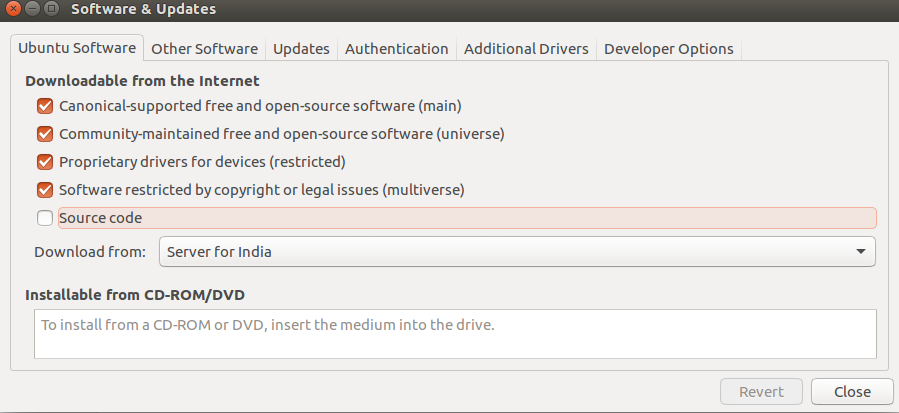
- An active, stable internet connection is mandatory.
- Make sure you’ve enabled the updates on your system. You can do that by clicking on software update and making the necessary changes as shown in the image below.
- An Ubuntu-based system is required to operate FabDep. The Linux version which FabDep supports is Ubuntu 18.04
- You need to run the bash script fabdep.sh from a user other than root user. Make sure to add the user into sudo group to have all root privileges. This will prevent any permission issues for the fabdep installation.
Use the following command to add into the sudo group:
$ sudo usermod -aG sudo username
FabDep Installation Process¶
The installation process typically involves the installation of key software such as MongoDB, Ansible, Fabric Binaries, NVM, Nodejs, Pm2, and JQ. Below is a step-by-step guide that will help you get started with the FabDep installation on the right foot.
- To download the FabDep tool, you need to first open the website www.fabricdeployer.com.
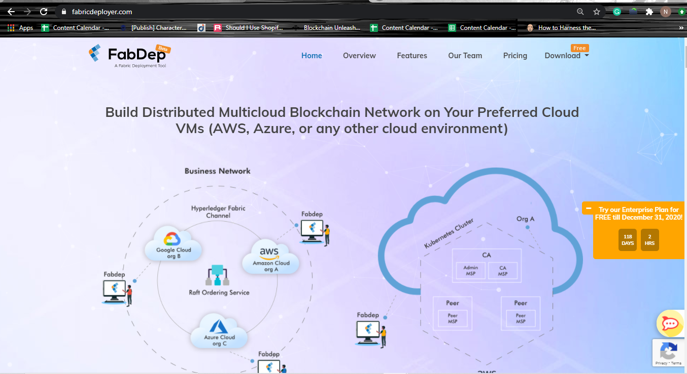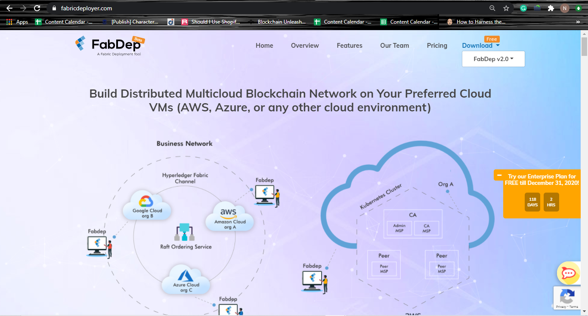
- Next, in order to download the FabDep build, you need to click on the “Download” tab present in the Navigation menu.
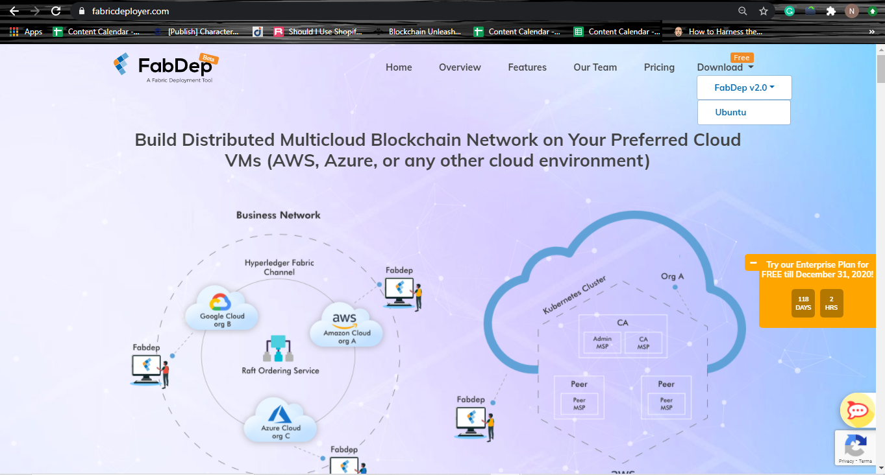
- Then, choose FabDep v2.0 from the dropdown and click on Ubuntu if your laptop is pre-configured with the Linux operating system.
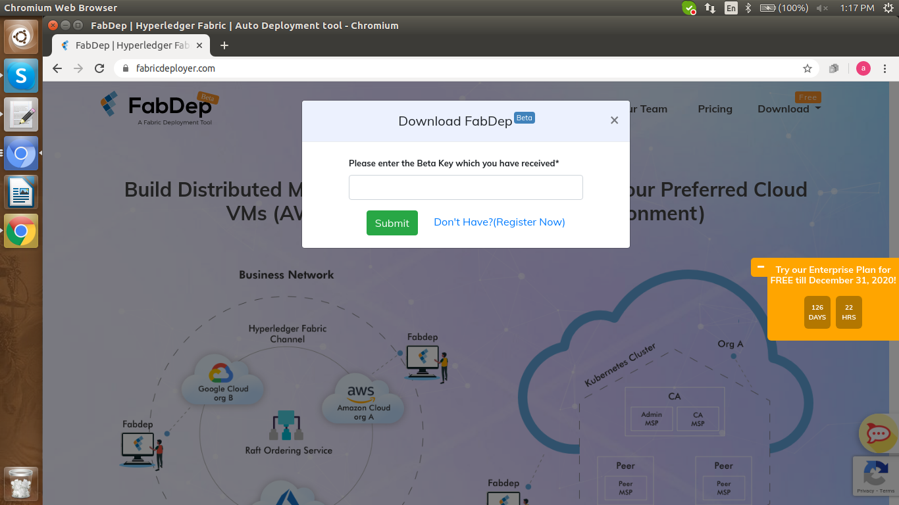
- If you’re a new user, you first need to register in order to proceed further.
- On the other hand, if you’re an existing user, you just need to enter the Beta Key which you received in your email at the time of registration.
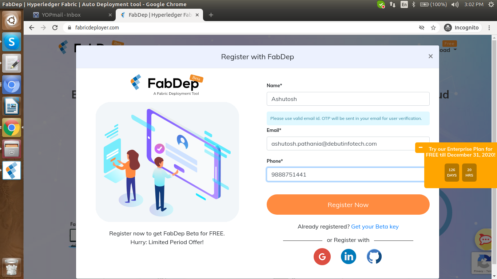
- To register, click on “Don’t Have? (Register Now)” link present next to the “Submit” button.
- After clicking on that, the FabDep Registration form will appear. Fill in the necessary details and click on the “Register Now” button. You can also register with your GitHub or LinkedIn account.
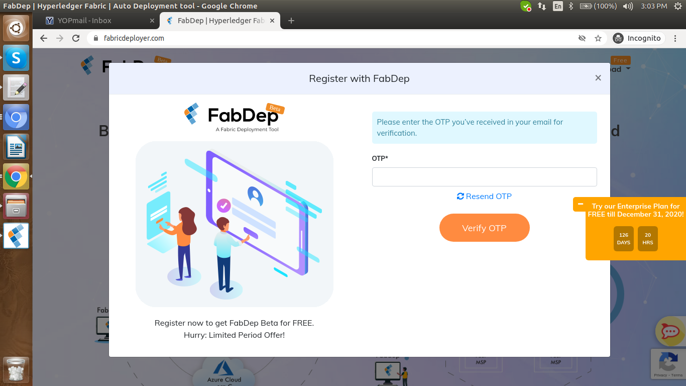
- After that, you will receive an OTP in your registered email which you need to copy and paste in the respective OTP field as shown in the image below. Click on “Verify OTP” to complete the registration process.
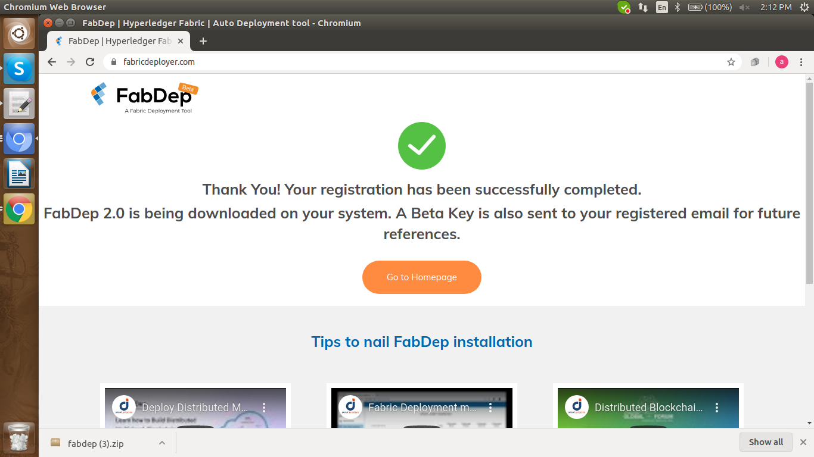
- Once you’re done with the registration, a “Thank You” page will appear on the screen, as shown below. You will receive a Beta Key in your registered email which you need to enter to download the FabDep build.
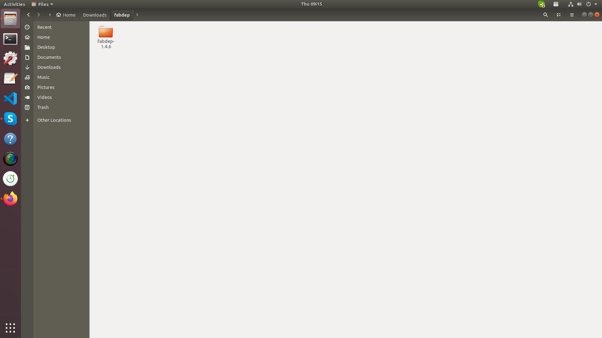
- After successful authentication, the FabDep tool will start downloading and once the download is complete, you need to open the fabdep.zip file from the “Downloads” folder in your system.
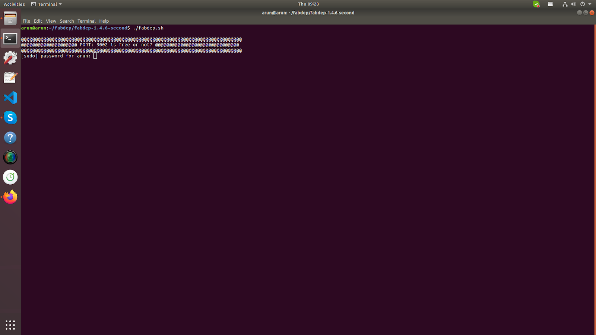
Unzip the fabdep.zip file. The following files and folders will be downloaded and saved in your system.
After unzipping the file run fabdep.sh file with command:
$ ./fabdep.sh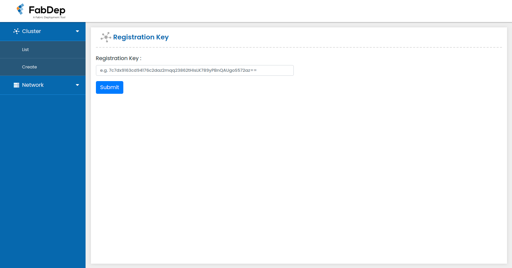
- Once the installation is complete, the FabDep tool will start and its welcome screen will appear on your system.
- The user can start using the tool after entering the Beta Key they received in their registered email, which they used for downloading the tool.
In case the user shuts down the machine, he or she needs to run the file “reboot.sh” present in the unzipped folder. The entire process of FabDep installation would take around 5-10 minutes to complete, depending primarily on the internet speed. If you’re facing any issues with the installation script, then kindly refer to the file “manual_installation_steps.md” for manual installation of FabDep.